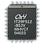

zRam
Dieser Artikel wurde für die folgenden Ubuntu-Versionen getestet:
Ubuntu 16.04 Xenial Xerus
Ubuntu 14.04 Trusty Tahr
Zum Verständnis dieses Artikels sind folgende Seiten hilfreich:
 Gerade auf Systemen mit wenig Arbeitsspeicher kommt es hin und wieder vor, dass dieser knapp wird und das System beginnt, den Swap-Speicher zu nutzen. Da sich dieser auf der Festplatte befindet, ist er im Vergleich zum RAM relativ langsam. Der Nutzer merkt das in Form von langsamen Programmen, springenden Mauszeigern oder einem ausgelasteten System.
Abhilfe schafft eine im Linux-Kernel integrierte Technik: zRam (Virtual Swap Compressed in RAM, auch zSwap; früher als "compcache" bekannt). Damit wird ein komprimierendes Blockgerät direkt im Arbeitsspeicher des Computers erstellt. zRam wird aber erst benutzt, wenn der Arbeitsspeicher ausgelastet ist: Der Kernel belegt zuerst den gesamten vorhandenen RAM, dann versucht er, Teile davon ins zRam zu komprimieren. Auf diese Art können mehr Daten im Arbeitsspeicher gehalten werden. Praktisch führt dies dazu, dass das System nicht so schnell auf eine langsamere Festplatte auslagern muss, der Preis ist aber eine etwas höhere Prozessorauslastung.
Unter Lubuntu war zRam ab 13.10 bis 14.04 vorinstalliert und aktiv.
Für wen ist zRam geeignet?¶
Grundsätzlich für jeden. Einzige Voraussetzungen sind ein Kernel ab 2.6.37 oder neuer und mehr als 512 MiB Arbeitsspeicher. Wer sich unsicher ist, welche Kernel-Version vorhanden ist, benutzt den Befehl [1]:
uname -r
Dabei gibt es zwei unterschiedliche Anwendungsszenarios:
wenig Speicher: Systeme mit bis zu 2 GiB Arbeitsspeicher. Hier kann zRam eine spürbare Auswirkung haben.
ausreichend Speicher: Der Computer besitzt ausreichend Arbeitsspeicher (mehr als 2 GiB) und muss deshalb sehr selten oder gar nicht in den Swap-Speicher schreiben. Wenn bei der Installation daher auf Swap (in Form einer Partition oder Datei) verzichtet wurde, kann man zRam stattdessen als stille Reserve verwenden.
Wie der Swap-Speicher aktuell genutzt wird, kann man vorher mittels Swap überwachen herausbekommen.
Installation¶
Man installiert [2] das folgende Paket:
zram-config (unter Ubuntu 12.04 in universe)
 mit apturl
mit apturl
Paketliste zum Kopieren:
sudo apt-get install zram-config
sudo aptitude install zram-config
Die Konfiguration erfolgt vollautomatisch.
Experten-Info:
Wer manuell in die automatische Konfiguration eingreifen möchte, schaut sich die Datei /etc/init/zram-config.conf an.
Kontrolle¶
Folgender Befehl zeigt, ob zRam aktiv ist:
swapon -s
Beispielausgabe:
Filename Type Size Used Priority /dev/sda5 partition 1574136 0 -1 /dev/zram0 partition 382740 0 5
Neben einer Swap-Partition auf /dev/sda5 werden hier 384 MiB für zRam genutzt (eingebaut sind 768 MiB).
Problembehebung¶
Grafikfehler¶
Falls es in Kombination mit manchen Grafikkarten (bzw. deren Treibern) zu Darstellungsproblemen bei der eingesetzten Desktop-Umgebung kommt, ist das oben genannte Installationspaket wieder zu entfernen und den Rechner neu zu starten. Das Gleiche gilt, wenn der Rechner im laufenden Betrieb einfriert (freeze) und nur noch mechanisches Ausschalten weiterhilft.
Doppelt so viel Swap-Speicher nach Installation¶
Das ist ganz normal, da zRam sich als Swap hinzufügt. Den "alten" Swap sollte man jedoch nicht entfernen, da er z.B. für den Ruhezustand genutzt wird.
Links¶
zramswap-enabler
 - Variante des Elementary-Projekts zum Aktivieren von zRAM (PPA)
- Variante des Elementary-Projekts zum Aktivieren von zRAM (PPA)Next Lubuntu provided with zram enabled!
- Erfahrungsbericht Ubuntu 13.10, 10/2013
- Erstellt mit Inyoka
-
 2004 – 2017 ubuntuusers.de • Einige Rechte vorbehalten
2004 – 2017 ubuntuusers.de • Einige Rechte vorbehalten
Lizenz • Kontakt • Datenschutz • Impressum • Serverstatus -
Serverhousing gespendet von